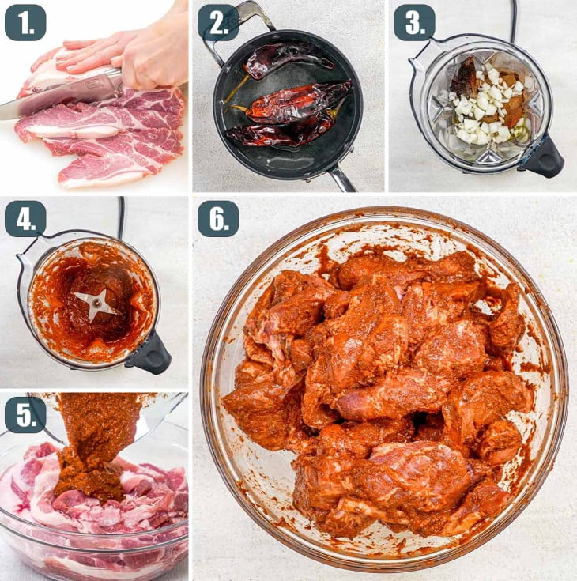

Tacos Al Pastor
Lebanese immigrants first created tacos al pastor in Mexico in the early 1900s. These immigrants brought their shawarma-style cooking techniques, which included rotating meat over an open flame—the method still used today to make tacos al pastor. Over time, Mexican cooks began adapting their flavors to the dish, adding things like pineapple and cilantro to give it a more distinct flavor. Nowadays, tacos al pastor can be found all across Mexico and beyond.
This recipe consists of mostly porkshoulder and herbs and spices you can find in your kitchen. This recipe is not hard but gives off that excellent taste.
Ingredients

- Pork: I used a 4 pound pork shoulder which I thinly cut into slices. You can also use pork loin for a leaner meat. If you're using pork shoulder, you can trim out some of the fat using a sharp knife.
- Chiles: You'll need dried Guajillo chiles. I find them on Amazon, but sometimes you can even find them at your local grocery stores. This is where a lot of that depth of flavor comes from.
- Juice: I used orange juice and lime juice in this marinade, but you can also use pineapple juice. The juice is important for that citrus flavor, plus it is a great meat tenderizer. A great substitute for the lime juice would be apple cider vinegar.
- Onion: You'll need one onion for some great flavor in your marinade. You can also add a couple garlic cloves if you like.
- Spices And Herbs: You'll need some ground cinnamon, cumin, salt, lots of black pepper, and oregano. I recommend using Mexican dried oregano in this recipe for a more authentic taste. Mexican oregano has lemon and citrus flavors with some tones of licorice. Regular oregano is slightly sweet with bitter and peppery notes.
- Achiote: You can use either achiote paste or powder, whatever you have. Achiote or annatto powder has an earthy, peppery flavor with a hint of bitterness. The achiote paste is what gives the pork this bright and vivid red color!
Serve with

- Pineapple
- Cilantro
- Red onions
- Lime juice
- Tortillas
Directions


- Prepare the pork. Using a sharp knife, cut the pork into thin ¼ inch slices. Place the pork slices in a large bowl.
- Prep the peppers. Add the guajillo chiles to a pot with boiling water. Cover with a lid and let them soak for about 5 minutes until they begin to soften. Transfer the chiles to a cutting board and carefully remove the seeds and stems. Set aside. I recommend using gloves.
- Make the marinade. To a blender, add the dried chiles, orange juice, lime juice, onion, cinnamon, pepper, Mexican oregano, cumin, and salt. Blend everything together until it forms a smooth paste. If the paste is too thick, add a bit of the hot water that you used to soak the chiles and blend it in until combined.
- Marinate the meat. Pour the marinade over the pork and mix everything thoroughly together. Cover the bowl with plastic wrap and refrigerate for at least 4 hours to overnight.
- Grill option. Preheat your grill to medium-high heat and lightly grease it. Grill the meat for about 7 to 8 minutes per side or until slightly charred. An instant-read meat thermometer inserted into the center of the largest piece should read at least 145°F. Transfer the pork to a platter or baking sheet and grill the pineapple slices on both sides until slightly charred, about 5 minutes per side.
- Oven option. Preheat the oven to 450°F. Line a baking pan that is narrower than your skewers with aluminum foil. You want to be able to prop your skewers on the baking sheet while cooking. A 9x13 inch pan usually works great if you're using 12-inch skewers.
- Make the skewers. Take one piece of pork and thread it onto two skewers. Repeat with more meat until there's about 1½ inches left at both ends of the skewers. Prop this onto the prepared baking pan. Repeat with remaining meat and skewers.
- Finish and cook. Drizzle the top of the meat with some olive oil. Transfer the pan to the oven and bake for about 30 minutes or until the surface of the meat browns and you can see some charred bits. You might need to turn the broiler on for more charred bits. During the cooking process, baste the meat with juices from the pan.
- Cut the meat. Let the cooked meat rest for 5 minutes before cutting it up into bite-sized pieces.
- Assemble the tacos and serve. Serve on tacos with grilled pineapple, fresh cilantro, red onion, salsa, and lime wedges.
Links and sources
Recipe
History of taco
Link to video